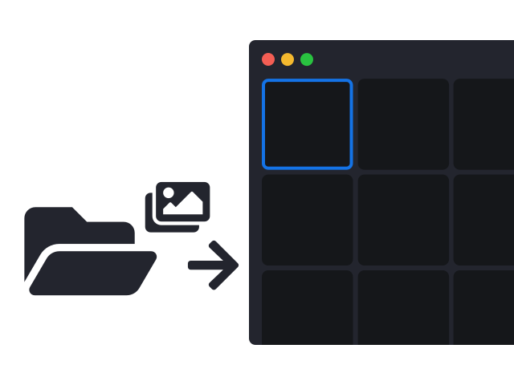

Watched Folders

Allusion uses watched folders to access your library. Select any folder and all images inside will appear in
Allusion. You can add and remove images from your folder without any additional steps. Your data always
remains in your hands.
Tag Hierarchy
Tags are a convinient tool to manage image libraries. Allusion builds upon this strength by allowing
hierarchical tag structures. Organizing tags in this way gives more control and a better overview.
Search

With Allusion you can easily find any image based on various criteria. You can filter according to source
folders, tags as well as other meta data. You can even combine multiple queries with the advanced search
inteface.